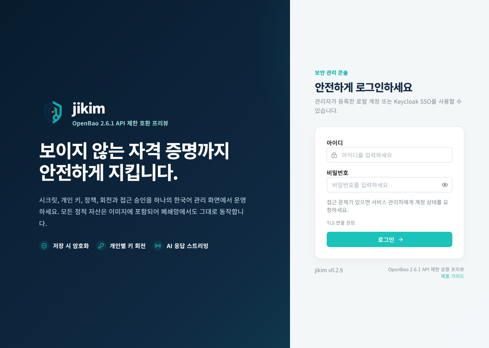
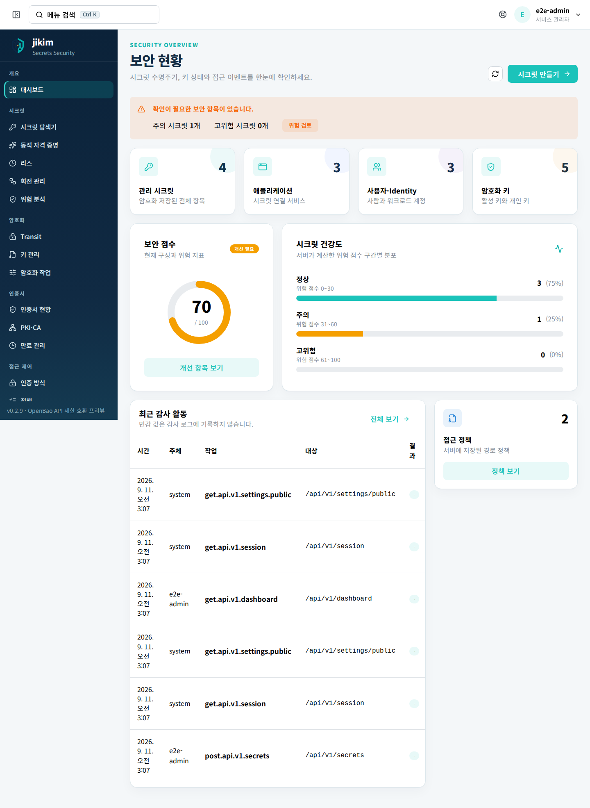
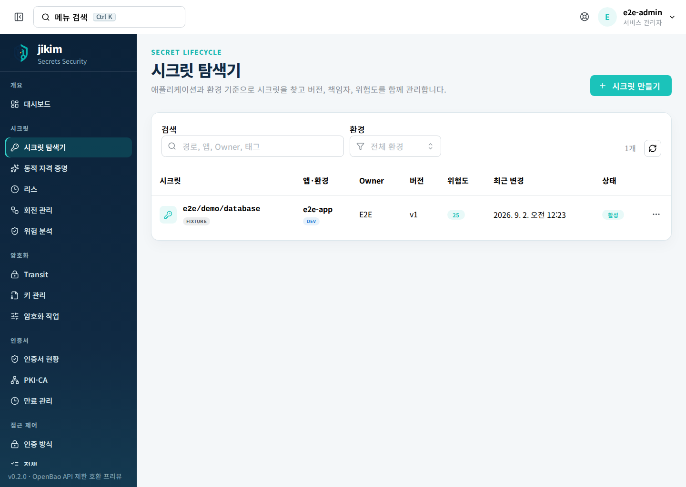
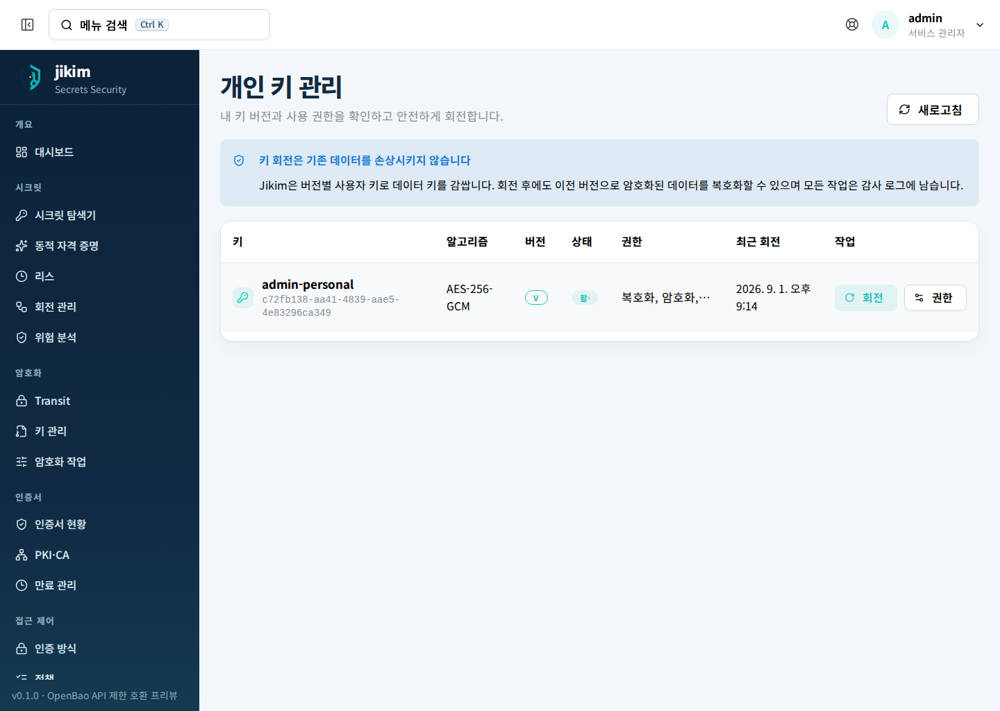
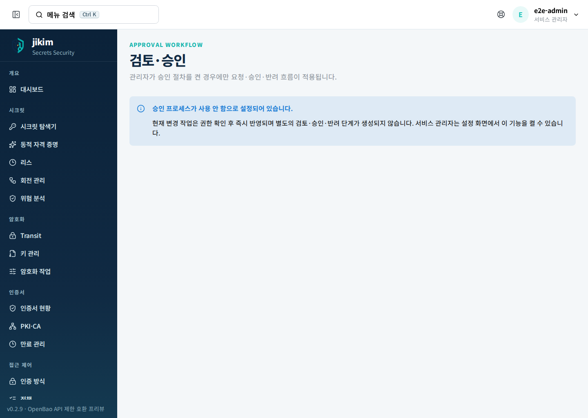
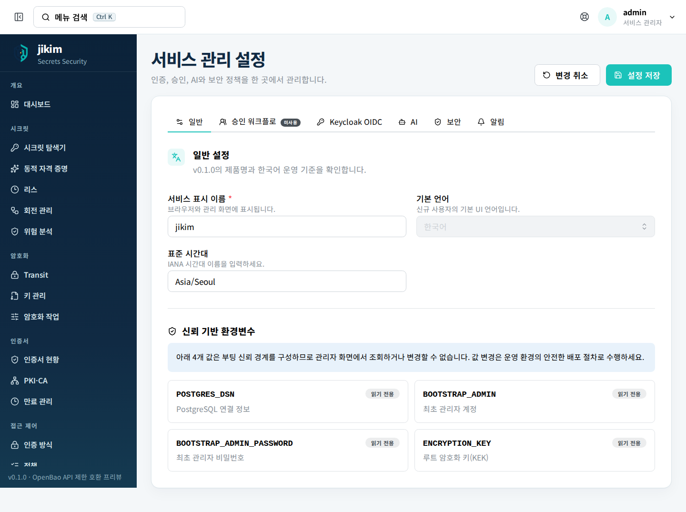

애플리케이션 중심 탐색
환경·애플리케이션·Owner 관계를 저장하고 Secret 목록에서 함께 검색합니다.
- DEV / STG / PRD 분류
- Owner와 기본 위험 점수
- 의존성 그래프는 후속 범위
jikim은 Secret의 저장을 넘어 소유자, 애플리케이션, 접근 정책, 회전과 감사 흐름을 한곳에서 연결하는 보안 플랫폼을 지향합니다. Go 단일 서버와 React 관리 화면으로 폐쇄망 운영을 단순하게 만듭니다.
전체 OpenBao 호환을 과장하지 않습니다. v0.2.1은 검증된 핸들러만 공개하는 제한 프로파일이며 differential suite는 아직 없습니다.
누가 소유하고, 어떤 서비스가 사용하며, 언제 바뀌어야 하는지까지 연결해야 Secret이 운영 가능한 자산이 됩니다.
환경·애플리케이션·Owner 관계를 저장하고 Secret 목록에서 함께 검색합니다.
Secret 버전과 개인별 암호화 키 버전을 관리하고 수동 회전을 감사 기록에 남깁니다.
관리자가 워크플로를 켠 대상에만 검토·승인·반려 단계를 적용하고, 나머지는 즉시 처리합니다.
서비스 시작에 꼭 필요한 값만 환경변수로 받고, Keycloak, AI, 승인과 보안 정책은 서비스 관리자 영역에서 관리하는 계약입니다.
관리자 가이드 읽기 →POSTGRES_DSN=postgres://…
BOOTSTRAP_ADMIN=admin
BOOTSTRAP_ADMIN_PASSWORD=••••••••
ENCRYPTION_KEY=••••••••••••
OpenBao의 모든 기능을 구현했다고 주장하지 않습니다. /v1/*는 현재 핸들러 구현 상한과 제약을 공개하고, jikim 관리 API와 MCP는 별도 계약으로 분리합니다.
| 영역 | v0.2.1 상태 | 현재 확인·제약 |
|---|---|---|
| 서비스 상태 | 기반 제공 | /healthz, /readyz |
| OpenAPI / Capabilities | 계약 제공 | /api/openapi.json, /api/v1/capabilities |
| OpenBao KV v2 | 제한 프로파일 | CAS·metadata·soft delete·undelete·destroy |
| Userpass / Token / Transit | 핸들러 일부 | 전체 differential suite 미구현 |
| MCP | 엄격 계약 | stateless POST · 2025-11-25 / 2025-06-18 |
| AI / Webhook | 연결 검증 | SSE 테스트·최대 262,144 토큰 설정 / HMAC 서명·이력·수동 재시도 |
| PKI / 동적 자격증명 / Raft | 확장 단계 | 구현 전 지원 표기 금지 |
릴리스는 외부 레지스트리에 의존하지 않는 Docker 이미지 번들과 체크섬을 제공합니다. PostgreSQL은 운영 조직이 관리하는 인스턴스에 연결합니다.
jikim-v0.2.1.tar.gzGitHub Release에서 번들과 체크섬 확보sha256sum -c *.sha256망 반입 전후 동일한 해시 확인docker load -i jikim-v0.2.1.tar.gz결과 태그 jikim:v0.2.1 확인docker compose up -dhealthz와 readyz 확인 후 서비스 개방모든 사용자·관리자 경로는 실제 Docker 이미지와 PostgreSQL을 사용하는 Playwright E2E 대상으로 관리합니다. 매니페스트가 capture-required이면 아래 이미지는 이전 기준 자료이며, complete와 v0.2.1 캡처 시각이 기록된 뒤에만 최신 화면 증빙입니다.






운영 전에는 릴리스 노트와 버전별 구현 프로파일을 함께 확인하세요.
예. 서비스 이미지는 jikim-v버전.tar.gz로 반입하고 docker load로 적재합니다. 런타임에는 외부 패키지 저장소가 필요하지 않습니다. PostgreSQL과 선택한 사내 연동 대상은 별도로 준비해야 합니다.
아닙니다. v0.2.1은 KV v2 CAS·metadata·버전 삭제·복구·폐기와 일부 Token·Transit을 제공하는 제한 프로파일입니다. OpenBao differential suite는 아직 없으므로 기존 클라이언트를 연결하기 전에 사용하는 API를 별도로 비교 테스트해야 합니다.
POSTGRES_DSN, BOOTSTRAP_ADMIN, BOOTSTRAP_ADMIN_PASSWORD, ENCRYPTION_KEY 네 개입니다. Keycloak, AI, 승인과 키 정책 같은 운영 설정은 관리자 화면에서 관리하는 구조입니다.
AI 연동은 메타데이터와 감사 통계를 중심으로 설계하며 Secret 평문을 모델 요청에 포함하지 않는 것을 기본 보안 경계로 둡니다. 관리자는 저장된 설정으로 SSE 연결을 검사하고 최대 출력 토큰을 262,144까지 설정할 수 있지만 실제 상한은 연결한 모델 정책을 따릅니다.
아닙니다. 이벤트는 HMAC-SHA256 서명과 함께 전송되고 결과와 payload가 이력에 저장됩니다. 관리자는 실패한 delivery를 명시적으로 수동 재전송할 수 있으며 예약형 자동 재시도 스케줄러는 제공하지 않습니다.
POST /mcp는 JSON과 event-stream을 모두 수락하는 Accept 헤더를 요구합니다. initialize 이후에는 MCP-Protocol-Version에 2025-11-25 또는 2025-06-18을 보내야 하며 서버는 session 없는 stateless 방식입니다.
사용자는 활성 개인 키에 회전 권한이 있을 때 자기 키를 회전할 수 있고, 관리자는 전체 개인 키를 관리할 수 있습니다. Transit 키는 관리자 또는 키에 회전 권한을 가진 팀장이 회전합니다. v0.2.1의 승인 워크플로는 키 회전에 적용되지 않습니다.
소스, 이미지, 오프라인 번들을 같은 버전 계약으로 검증합니다.
{kind=link}
{kind=link}
{kind=link}
{kind=link}
{kind=link}
{kind=link}